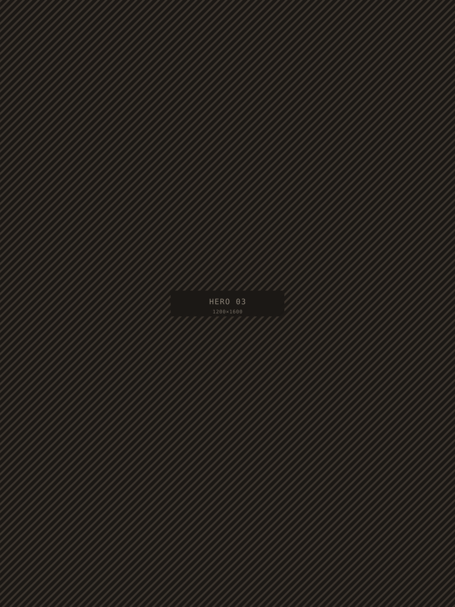
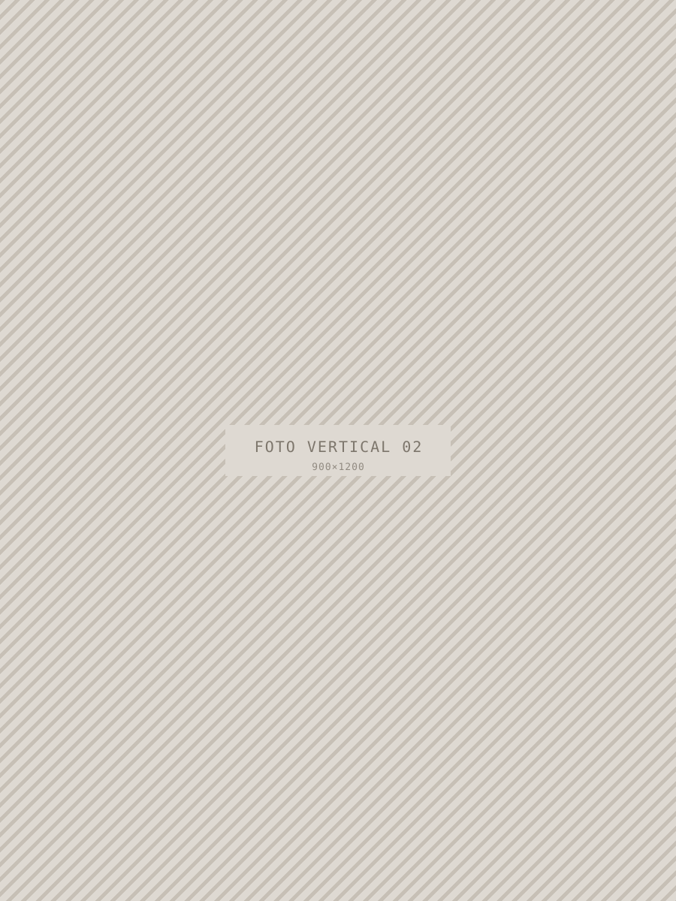
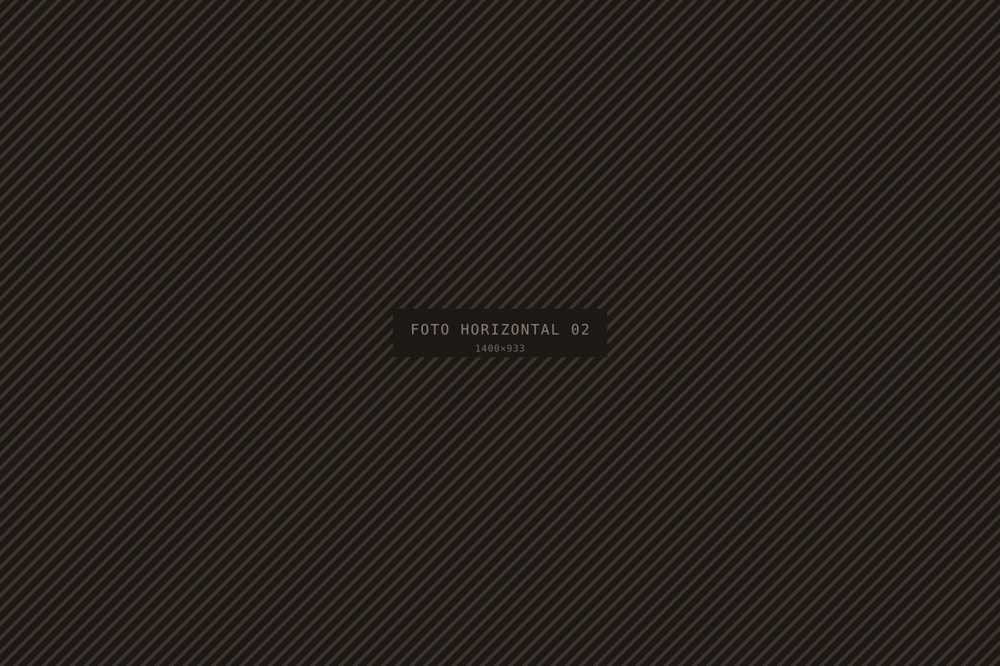
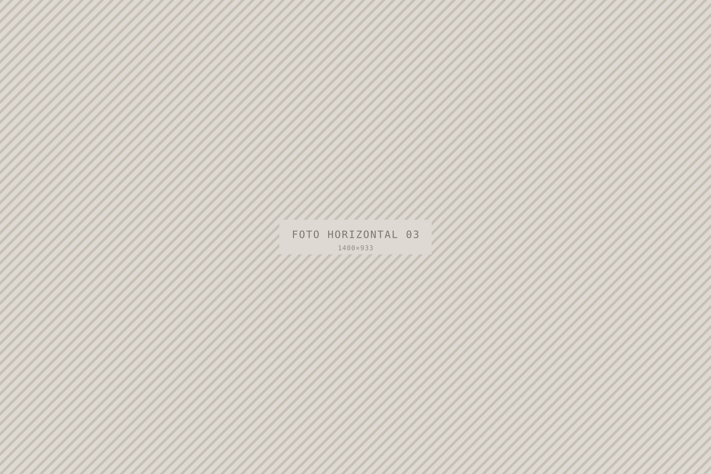

00Nome do estúdio
Aparece no cabeçalho, no rodapé e no título das páginas. Usa letras maiúsculas se quiseres o estilo clássico.
01Hero
Os blocos que se alternam no topo do site a cada 5 segundos, cada um com duas imagens. Clica em qualquer uma para enviares outra foto.

Imagem da esquerda

Imagem da direita

Imagem da esquerda

Imagem da direita
02Sobre mim
O retrato, o título e o texto de apresentação.

Retrato
03Sessões
As sessões da home. Escolhes quantas aparecem e quais são.
Escreve um número maior para caberem mais sessões, ou menor para mostrar menos. De 1 a 12.



04Galeria
As fotos da home. Cada foto fica marcada com uma faixa a mostrar onde está a ser usada.
19 na home · 13 só na página · 32 no total



05CTA
A faixa larga perto do rodapé. Troca o fundo e edita os textos que aparecem sobre a imagem.

Imagem de fundo
06Rodapé
A linha final do site, mais os links de Instagram e WhatsApp.